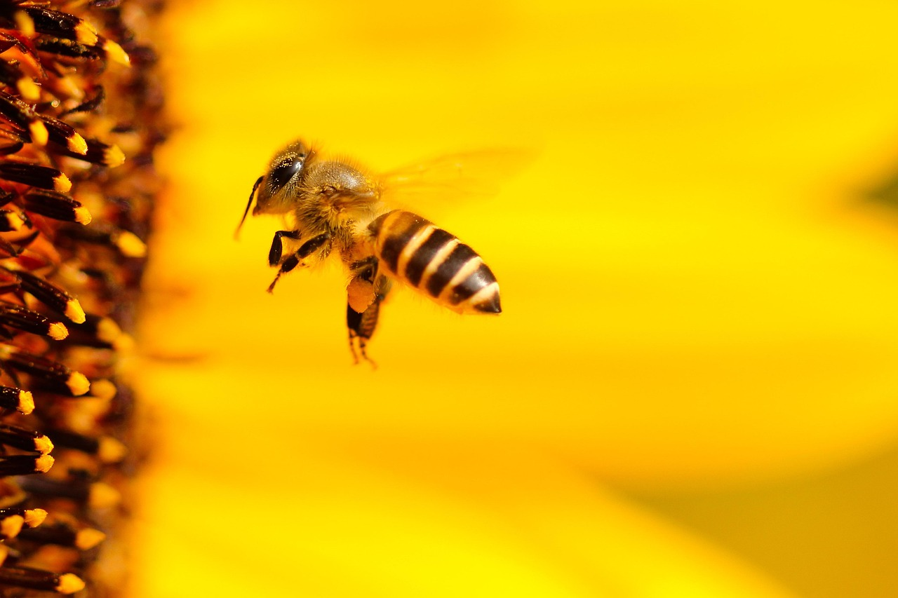
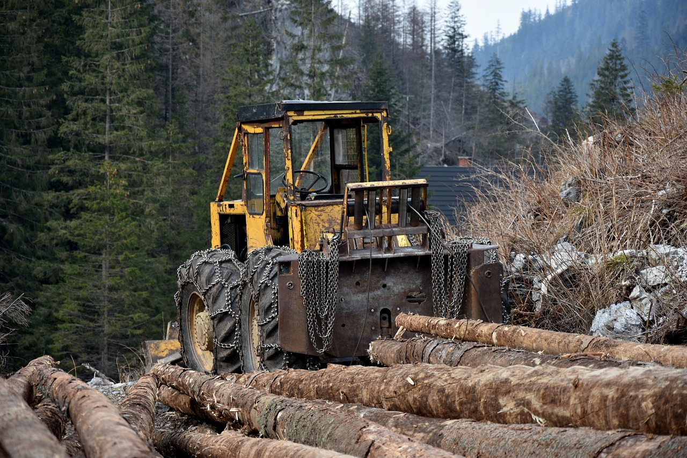

LAS ABEJAS
Las abejas son unos insectos extremadamente sociables que viven en colonias y en los que se organizan en una estricta jerarquía de tres rangos sociales: la abeja reina, los zánganos y las abejas obreras.
La colmena es el nido, constituido por panales de cera, de una colonia de abejas.
Las abejas, durante la época de floración, recolectan el polen y néctar de las flores.
El polen servirá de alimento para las crías y el néctar se transformará en miel, alimento que las abejas almacenan en los panales y con el que se alimentarán todo el año.
Las abejas constituyen un elemento en la cadena interactiva de los ecosistemas. El papel de la abeja es muy importante en los diversos ciclos de la vida de diversas especies.

Desgraciadamente esta especie se ve en peligro de desaparecer, ya que se encuentran amenazadas por la degradación de sus hábitats, el cambio climático, las prácticas agrarias (agricultura industrializada), el cambio en el uso de los suelos o las especies invasoras.
Dentro de los Objetivos de Desarrollo Sostenible, está el de proteger, restablecer y promover el uso sostenible de los ecosistemas terrestres, gestionar los bosques de forma sostenible, luchar contra la desertificación, detener e invertir la degradación de las tierras y poner freno a la pérdida de la diversidad biológica, algo fundamental para la supervivencia de las abejas y el resto de especies que dependen de ellas.
